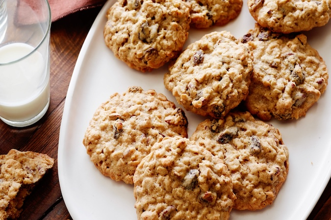

Cookies
Prep time:
30 mins
Yield:
5½ dozens
INGREDIENTS:
1 cup butter or margarine, softened
1½ cups firmly packed brown sugar
3 eggs
3 tablespoons strong coffee
2½ cups all-purpose flour
1 teaspoon baking soda
1 tablespoon ground cinnamon
1 tablespoon ground allspice
1 cup raisins
1 cup chopped pecans
STEPS:
Cream butter in a large mixing bowl; gradually add sugar, beat mixture until it is light and fluffy.
Add your eggs, one at a time, beat it well after each addition.
Add the coffee and fold it into the mixture well.
Combine flour, soda, cinnamon, and allspice in a large mixing bowl. Stir in the raisins and pecans, then add this to the creamed mixture.
Now mix the batter until it becomes a kneadable dough.
Put teaspoonfulls of dough 2 inches apart onto a greased cookie sheet. Bake at 350° for 8 minutes. Remove from cookie sheets, and cool on wire racks.